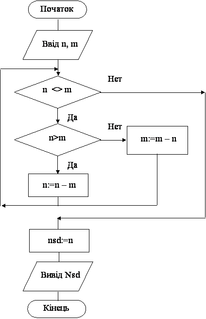

Назад
Зміст
Вперед
Задачі на знаходження НСД за алгоритмом Евкліда
Число n є дільником числа m, якщо число m ділиться на число n без остачі.
Дільники числа 18: 1, 2, 3, 6, 9, 18.
Дільники числа 24: 1, 2, 3, 4, 6, 12, 24.
Найбільший спільний дільник чисел 18 та 24 це 6. Скорочено: НСД (18, 24) = 6.
НСД (m, n) це найбільше з чисел на яке діляться і m і n.
Два числа m та n називаються взаємно простими, якщо їх НСД (m, n)=1. Наприклад, НСД(9, 16)=1. Не плутати з простими числами! Числа 9 та 16 не прості, бо мають дільники окрім 1 та самого числа.
Алгоритм Евкліда дозволяє знайти НСД двох натуральних чисел.
Суть алгоритму Евкліда – два числа порівнюють, та з більшого віднімають менше до тих пір, поки числа не стануть рівними. Число, якому вони стануть рівними і є їх найбільший спільний дільник.
Алгоритм Евкліда змінює вхідні дані! Тому рекомендується їх запам’ятовувати у інші змінні.
Приклад
Знайдіть НСД(n,m)найбільший спільний дільник двох натуральних чисел, за алгоритмом Евкліда.
Результат роботи програми
| Ввід | Вивід |
|---|
| 18 24 | 6 |
| 9 16 | 1 |
Змінні:
Вхідні:
- n – перше натуральне число (цілого типу)
- m – друге натуральне число (цілого типу )
Вихідні:
- nsd –найбільший спільний дільник чисел n та m (цілого типу)
Алгоритм
- Спочатку потрібно ввести числа оператором read(n,m).
- Якщо числа не рівні потрібно з більшого віднімати менше, поки вони не стануть рівними. Тобто спочатку потрібно перевіряти умову, а потім змінювати числа. Тому будемо використовувати цикл while.
- У заголовку циклу перевіряється умова n<>m , числа не рівні?
- Якщо умова вірна, тобто числа різні, то тіло циклу виконується і робиться перехід на перший оператор циклу (пункт 4).
- Якщо умова не вірна, тобто числа рівні, то тіло циклу пропускається і виконується перехід на перший оператор після циклу (пункт 5).
- У тілі циклу будемо виконувати такі дії:
- Оператор if n>m then порівнює числа.
- Якщо умова вірна, то змінюємо більше число n оператором n:=n - m.
- Якщо умова невірна, то змінюємо більше число m оператором m:=m - n.
- Виконується перехід на заголовок циклу (пункт 3).
- Коли цикл закінчиться, тобто числа стають рівними (n=m) присвоюємо значення будь-якого з них (наприклад n), змінній nsd оператором nsd:=n.
- Виводимо на екран знайдений НСД оператором writeln(nsd).
Блок–схема програми

Програма
var n,m,nsd:word;
begin
read(n,m);
while n<>m do
if n>m then n:=n-m
else m:=m-n;
nsd:=n;
writeln(nsd);
end.
|
Трасування програми
Проводячи трасування програми, потрібно обов’язково дивитись текст програми!
| Оператор | n | m | nnsd | Пояснення |
|---|
| read(n,m) | 18 | 24 | | Ввід чисел |
| while n<>m do | | | | Заголовок циклу. Перевірка умови. Умова вірна, тому перехід на початок циклу. |
| if n>m then | | | | Перевірка умови. Умова невірна, тому виконується оператор, що стоїть після else. |
| m:=m-n | | 6 | | Зміна числа m |
| while n<>m do | | | | Заголовок циклу. Перевірка умови. Умова вірна, тому перехід на початок циклу. |
| if n>m then | | | | Перевірка умови. Умова вірна, тому виконується оператор, що стоїть після then. |
| n:=n-m | 12 | | | Зміна числа n |
| while n<>m do | | | | Заголовок циклу. Перевірка умови. Умова вірна, тому перехід на початок циклу. |
| if n>m then | | | | Перевірка умови. Умова вірна, тому виконується оператор, що стоїть після then. |
| n:=n-m | 6 | | | Зміна числа n |
| while n<>m do | | | | Заголовок циклу. Перевірка умови. Умова невірна, цикл завершується. Перехід на оператор після циклу |
| nsd:=n | | | 6 | Запам’ятовуємо значення НСД у змінній nsd |
| writeln(nsd) | | | | Вивід значення НСД на екран. |
Варіанти задач
- Знайдіть найменше спільне кратне (НСК) за формулою .
- Дано два цілих числа. З’ясуйте, чи вони взаємно прості.
- Дано натуральні числа a і b, що позначають чисельник та знаменник простого дробу. Скоротіть дріб, тобто знайдіть такі натуральні числа p та q, що не мають спільних дільників, що . Пояснення: за алгоритмом Евкліда знаходимо НСД(a,b) та ділимо чисельник та знаменник на це число.
- Знайдіть суму двох простих дробів. Тобто дано натуральні числа a, b, c, d. Потрібно знайти два взаємно простих числа p і q, таких що . Пояснення: скласти два дробу. Чисельник дорівнює a*d+b*c. Знаменник дорівнює b*d. Потім за алгоритмом Евкліда знаходимо НСД чисельника та знаменника та ділимо чисельник та знаменник на це число.
- Знайдіть найбільший спільний дільник трьох натуральних чисел, за алгоритмом Евкліда та формулою НСД(a,b,c)=НСД(НСД(a,b),c).
- Дано числа M, N, R. Знайдіть в інтервалі [M, N] усі числа взаємно прості з R.
- Знайдіть усі пари взаємно простих чисел в інтервалі [M, N]
- Знайти всі правильні прості дроби, що не скорочуються, знаменники яких не більше 7 (дріб задається двома натуральними числами – чисельником та знаменником).
Відповідь: 1/2 1/3 2/3 1/4 3/4 1/5 2/5 3/5 4/5 1/6 5/6 1/7 2/7 3/7 4/7 5/7 6/7
- Дано натуральні числа m, n1, n2, ...,nm (m>=2). Обчисліть НСД(n1,n2,...,nm ), використовуючи співвідношення
НСД(n1,n2,...,nm)=НСД(НСД(n1,n2,...,nm-1),nm) та алгоритм Евкліда. Пояснення: числа вводити у циклі, ввести два числа, знайти для них НСД, ввести третє число, знайти НСД для третього числа та знайденого НСД перших двох чисел, ввести четверте число і т.д. поки не будуть введені всі числа.
Назад
Зміст
Вперед